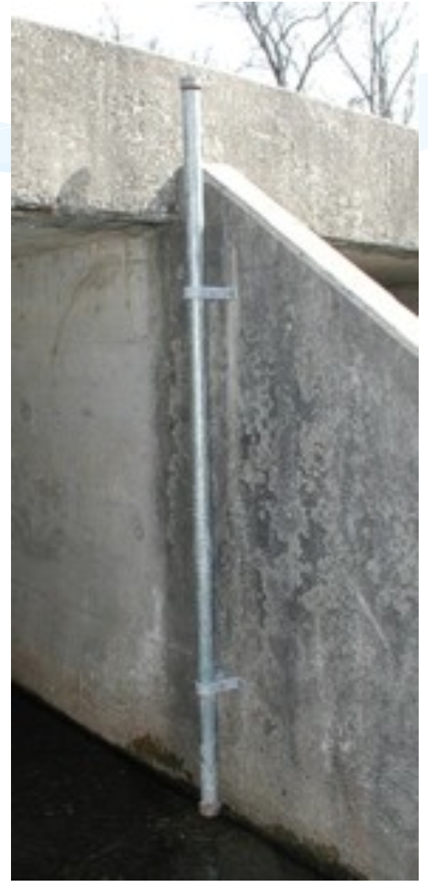
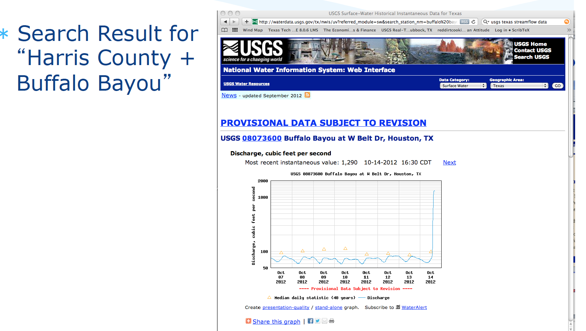

6. Streamflow Measurement and Streamflow Data#
Course Website
Readings#
Chow, V.T., Maidment, D.R., Mays, L.W., 1988, Applied Hydrology: New York, McGraw-Hill. pp. 1-12
See 7-31 TxDOT HDM for a description of slope-area (slope-conveyance) method
Generalized Skew Update and Regional Study of Distribution Shape for Texas Flood Frequency Analyses
Jamie Chan (2014) Learn Python in One Day and Learn It Well. LCF Publishing. Kindle Edition.
Grus, Joel. Data Science from Scratch: First Principles with Python. O’Reilly Media. Kindle Edition.
https://www.amazon.com/Distributional-Statistics-Environment-Statistical-Computing/dp/1463508417
https://www.astroml.org/book_figures/chapter3/fig_gamma_distribution.html
https://www.inferentialthinking.com/chapters/10/Sampling_and_Empirical_Distributions.html
https://www.inferentialthinking.com/chapters/15/Prediction.html
Videos#
How to look at and download streamflow data from the USGS NWIS website
Precipitation Runoff Modeling System (PRMS) Streamflow Modules
Improved process based streamflow simulation through ensemble and stochastic data driven approaches
Hydrology - Statistical Hydrology 2 (go to time stamp 47:00 to get to regionalization)
Streamflow Measurement#
Streamflow is measured by a variety of gaging technologies.
Continuous record (usually stage, then rated to produce discharge)
Located at control section if possible
Crest-Stage (captures peak stage)
Uses slope-area to estimate discharge
Post-event site visit required to survey debris-line as independent check of estimate
Measurement Techniques#
Weirs
Flumes
Velocity-area methods
Continuous gages use some kind of stilling well, and transducers to measure stage and send to satellite. During visits, a nearby staff gage is read to independently validate the transducer readings

Crest-Stage gagues usually consist of a vertical pipe with holes in bottom – becomes a stilling well. Inside a staff gage and small amount of cork “flour” records water surface elevation.
A hydrographer visits site routinely (and after major events) and records cork elevation and re-sets gage.
The elevations are marked on a staff inside the pipe with pencil (and dated)
Slope area method between several nearby pipes is used to estimate discharge

Slope Area Method#
Application of Manning’s equation, using the slope of the water surface as the friction slope, and the stage geometry at measured cross sections.
Recall the factor 1.49 is for US Customary units, 1.0 is used if terms are expressed in SI units.
Acoustic Doppler Current Profiler (ADCP)#
An Acoustic Doppler Current Profiler, or Acoustic Doppler Profiler, is often referred to with the acronym ADCP.
Scientists use the instrument to measure how fast water is moving across an entire water column. An ADCP (uplooking) anchored to the seafloor can measure current speed not just at the bottom, but also at equal intervals all the way up to the surface.
The instrument can also be mounted horizontally on seawalls or bridge pilings in rivers and canals to measure the current profile from shore to shore, and to the bottoms of ships to take constant current measurements as the boats move. In very deep areas, they can be lowered on a cable from the surface.
The ADCP measures water currents with sound, using a principle of sound waves called the Doppler effect. A sound wave has a higher frequency, or pitch, when it moves to you than when it moves away. You hear the Doppler effect in action when a car speeds past with a characteristic building of sound that fades when the car passes.
The ADCP works by transmitting “pings” of sound at a constant frequency into the water. (The pings are so highly pitched that humans and even dolphins can’t hear them.) As the sound waves travel, they ricochet off particles suspended in the moving water, and reflect back to the instrument. Due to the Doppler effect, sound waves bounced back from a particle moving away from the profiler have a slightly lowered frequency when they return. Particles moving toward the instrument send back higher frequency waves. The difference in frequency between the waves the profiler sends out and the waves it receives is called the Doppler shift. The instrument uses this shift to calculate how fast the particle and the water around it are moving.
Sound waves that hit particles far from the profiler take longer to come back than waves that strike close by. By measuring the time it takes for the waves to bounce back and the Doppler shift, the profiler can measure current speed at many different depths with each series of pings.
Streamflow Data#
Data sources for streamflow include:
USGS NWIS (Website)
IBWC
Older “paper-based” records
Local gage networks
Illustrative example using USGS NWIS
Navigate to landing page for state of interest

Locate site of interest, or something stupid close

Download desired record(s)

Typical file structure

Hydrograph Analysis and Baseflow Separation#
Stormflow vs. baseflow
Recession curves and storage effects